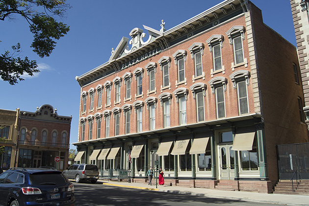

No Country For Old Men
Main Content

The Coens’ adaptation of Cormac McCarthy’s novel is set on the Texas-Mexico borderlands, but although there was filming in Texas, much of the production was shot in New Mexico.
The opening desert scenes, as Llewellyn Moss (Josh Brolin) comes across the messy aftermath of a drug deal gone horribly wrong and finds a casefull of cash, uses the real West Texas desert around the town of Marfa, on I-90 a good 400 miles west of San Antonio (they didn’t lie, Texas is a big place). The town is a gateway to the spectacular Big Bend National Park, a great bite taken out of Mexico as the Rio Grande skirts the Chisos Mountains.
At the time of filming, Paul Thomas Anderson was just down the road a short distance away, filming his oil epic There Will Be Blood. Until these two productions came to the town, Marfa was most famous for being the main location of James Dean’s last film, Giant, in 1956 – as well as for its Marfa Mystery Lights.
Realising that the stash of money has turned him into a hunted man, Moss goes on the run and, from here on, most of the locations are in New Mexico, around the small town of Las Vegas, on I-25 about 120 miles northeast of Albuquerque.
You might remember Las Vegas as the town where Wyatt and Billy joined in the local parade and found themselves thrown into jail in Easy Rider.
The motel in ‘Del Rio, Texas’, where Moss hides the money in the air condition shaft, is the Regal Motel, 1809 North Grand Avenue, to the north of Las Vegas.
In the heart of town, Las Vegas’s historic Plaza Hotel, 230 Plaza Park, becomes the ‘Eagle Pass Hotel’, where Moss discovers the transponder that’s allowing the cold-blooded hitman Anton Chigurh (Javier Bardem) to track him. He narrowly escapes the relentless killer, but bounty hunter Carson Wells (Woody Harrelson) isn’t so lucky.
The Plaza Hotel is also featured in John Carpenter's 1998 Vampires.
Seemingly alongside the hotel, but quite a few blocks east, on Douglas Avenue, between 6th and 7th Streets in Las Vegas, Moss commandeers a car, but Chigurh quickly dispatches the luckless driver. Around the corner, on Grand Avenue, Moss manages to wound Chigurh and make his escape.
The ‘United States Border Station’ crossing, which leads from ‘Eagle Pass’ to its cross-border Mexican twin, ‘Piedras Negras’, was built in Las Vegas, on the East University Avenue freeway overpass, running east from Grand Avenue over the I-25.
The bridge and the freeway exit had to be closed for a week while the 50,000-pound steel structure was hauled in and put into place. It’s here that the bloodied Moss gives three bemused young guys $500 for a coat, and tosses the case of money into the no man’s land beneath the bridge.
Moss crosses the border into Mexico and collapses exhausted, being awakened next day by a norteño band. Surprisingly, this brief scene actually is Mexico, in front of the Church of Notre Dame de Guadalupe in the real Piedras Negras, across the Rio Grande from Eagle Pass. It really is that easy to cross into Mexico to visit a border town, but be careful to take all relevant documentation with you – it’s not always quite so easy to get back into the US.
Don’t go looking for the ‘Mike Zoss Pharmacy’, the drugstore from which Chigurh coolly helps himself to medical supplies after creating a diversion by blowing up a parked car. This is an in-joke nod to the Coens’ company, Mike Zoss Productions, named after a pharmacy where the young Coen brothers used to hang out in their hometown of Minneapolis. The pharmacy in the movie was an empty property at 610 Douglas Avenue in Las Vegas – right where Moss had earlier flagged down the car to escape Chigurh.
When Sheriff Bell (Tommy Lee Jones) heads up to ‘Odessa’, he’s not really leaving Las Vegas. The diner in which he meets Moss’s wife, Carla Jean (Kelly Macdonald), is El Camino Motel & Restaurant, now the Knights Inn, 1152 North Grand Avenue at East Baca Avenue.
Moss gives Carla Jean instructions to meet him in ‘El Paso’. The motel, where Sheriff Bell arrives just too late to prevent the bloody massacre, is the Desert Sands Motel, 5000 Central Avenue Southeast, in Albuquerque.
Visit Info
Visit The Film Locations
Texas
Visit: Texas
New Mexico
Visit: New Mexico
Visit: Las Vegas
Stay at: the Regal Motel, 1809 North Grand Avenue, , Las Vegas, NM 87701 (tel: 505.454.1456)
Stay at: the Plaza Hotel, 230 Plaza, Las Vegas (tel: 505.425.3591)
Stay at: the Knights Inn, 1152 North Grand Avenue, Las Vegas, NM 87701 (tel: 505.425.5994)
Visit: Albuquerque
Flights: Albuquerque International Sunport, 2200 Sunport Boulevard, Albuquerque, NM 87106 (tel: 505.244.7700)
Mexico
Visit: Mexico